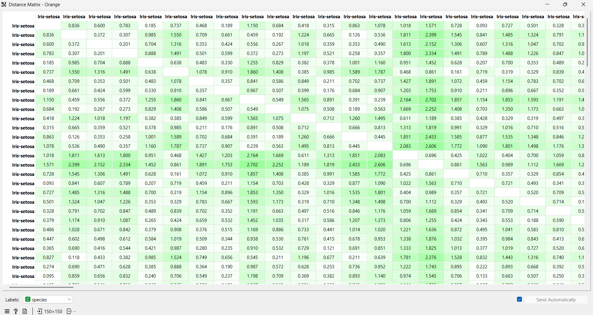
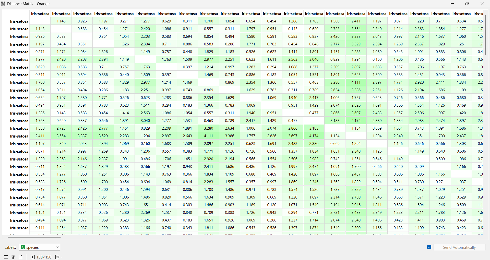

Mengukur Jarak Data Iris#
Dalam analisis data, kita perlu tahu seberapa mirip satu data dengan data lainnya. Caranya adalah dengan mengukur jaraknya. Semakin kecil nilainya, berarti datanya makin mirip. Untuk dataset Iris, kita bakal pakai 3 metode: Euclidean, Manhattan, dan Minkowski.
Contoh 2 data pertama yang kita pakai buat hitung manual:
Data 1 (\(x_1\)): (5.1, 3.5, 1.4, 0.2)
Data 2 (\(x_2\)): (4.9, 3.0, 1.4, 0.2)
import pandas as pd
import numpy as np
from scipy.spatial import distance
df = pd.read_csv('IRIS.csv')
fitur = df.iloc[:3, 0:4]
display(fitur)
| sepal_length | sepal_width | petal_length | petal_width | |
|---|---|---|---|---|
| 0 | 5.1 | 3.5 | 1.4 | 0.2 |
| 1 | 4.9 | 3.0 | 1.4 | 0.2 |
| 2 | 4.7 | 3.2 | 1.3 | 0.2 |
1. Euclidean Distance#
Metode ini ibarat narik garis lurus antara dua titik. Ini adalah metode yang paling umum digunakan dalam algoritma clustering.
Rumus: $\(d(x,y) = \sqrt{\sum_{i=1}^{n} (x_i - y_i)^2}\)$
Keterangan:
\(d(x,y)\): Jarak Euclidean antara data \(x\) dan data \(y\).
\(n\): Jumlah fitur (pada Iris ada 4 fitur).
\(x_i\): Nilai fitur ke-\(i\) pada data \(x\).
\(y_i\): Nilai fitur ke-\(i\) pada data \(y\).
Langkah Perhitungan Manual (\(x_1\) ke \(x_2\)): $\(d(x_1,x_2) = \sqrt{(5.1-4.9)^2 + (3.5-3.0)^2 + (1.4-1.4)^2 + (0.2-0.2)^2}\)\( \)\(d(x_1,x_2) = \sqrt{0.04 + 0.25 + 0 + 0} = \sqrt{0.29} \approx 0.538\)$
Implementasi Kode Python:
dist_euclidean = distance.cdist(fitur, fitur, 'euclidean')
df_euclidean = pd.DataFrame(dist_euclidean, columns=['D1','D2','D3'], index=['D1','D2','D3'])
display(df_euclidean)
| D1 | D2 | D3 | |
|---|---|---|---|
| D1 | 0.000000 | 0.538516 | 0.509902 |
| D2 | 0.538516 | 0.000000 | 0.300000 |
| D3 | 0.509902 | 0.300000 | 0.000000 |
Hasil dari Orange Data Mining:

2. Manhattan Distance#
Menghitung jarak dengan menjumlahkan selisih absolut antar koordinat (sering disebut jarak blok kota).
Rumus: $\(d(x,y) = \sum_{i=1}^{n} |x_i - y_i|\)$
Keterangan:
\(d(x,y)\): Jarak Manhattan antara data \(x\) dan data \(y\).
\(|x_i - y_i|\): Nilai mutlak dari selisih fitur ke-\(i\) antara dua data.
Langkah Perhitungan Manual (\(x_1\) ke \(x_2\)): $\(d(x_1,x_2) = |5.1 - 4.9| + |3.5 - 3.0| + |1.4 - 1.4| + |0.2 - 0.2|\)\( \)\(d(x_1,x_2) = 0.2 + 0.5 + 0 + 0 = 0.7\)$
Implementasi Kode Python:
dist_manhattan = distance.cdist(fitur, fitur, 'cityblock')
df_manhattan = pd.DataFrame(dist_manhattan, columns=['D1','D2','D3'], index=['D1','D2','D3'])
display(df_manhattan)
| D1 | D2 | D3 | |
|---|---|---|---|
| D1 | 0.0 | 0.7 | 0.8 |
| D2 | 0.7 | 0.0 | 0.5 |
| D3 | 0.8 | 0.5 | 0.0 |
Hasil dari Orange Data Mining:

3. Minkowski Distance#
Minkowski adalah bentuk generalisasi dari Euclidean dan Manhattan. Di sini kita menggunakan parameter \(p=3\).
Rumus: $\(d(x,y) = \left( \sum_{i=1}^{n} |x_i - y_i|^p \right)^{\frac{1}{p}}\)$
Keterangan:
\(p\): Parameter urutan Minkowski. Jika \(p=1\) menjadi Manhattan, jika \(p=2\) menjadi Euclidean.
Pada contoh ini kita menggunakan \(p=3\).
Langkah Perhitungan Manual (\(x_1\) ke \(x_2\)): $\(d(x_1,x_2) = (|5.1-4.9|^3 + |3.5-3.0|^3 + 0 + 0)^{1/3}\)\( \)\(d(x_1,x_2) = (0.008 + 0.125)^{1/3} = (0.133)^{1/3} \approx 0.509\)$
Implementasi Kode Python (Matriks Jarak):
dist_minkowski = distance.cdist(fitur, fitur, 'minkowski', p=3)
df_minkowski = pd.DataFrame(dist_minkowski, columns=['D1','D2','D3'], index=['D1','D2','D3'])
display(df_minkowski)
| D1 | D2 | D3 | |
|---|---|---|---|
| D1 | 0.000000 | 0.510447 | 0.451436 |
| D2 | 0.510447 | 0.000000 | 0.257128 |
| D3 | 0.451436 | 0.257128 | 0.000000 |